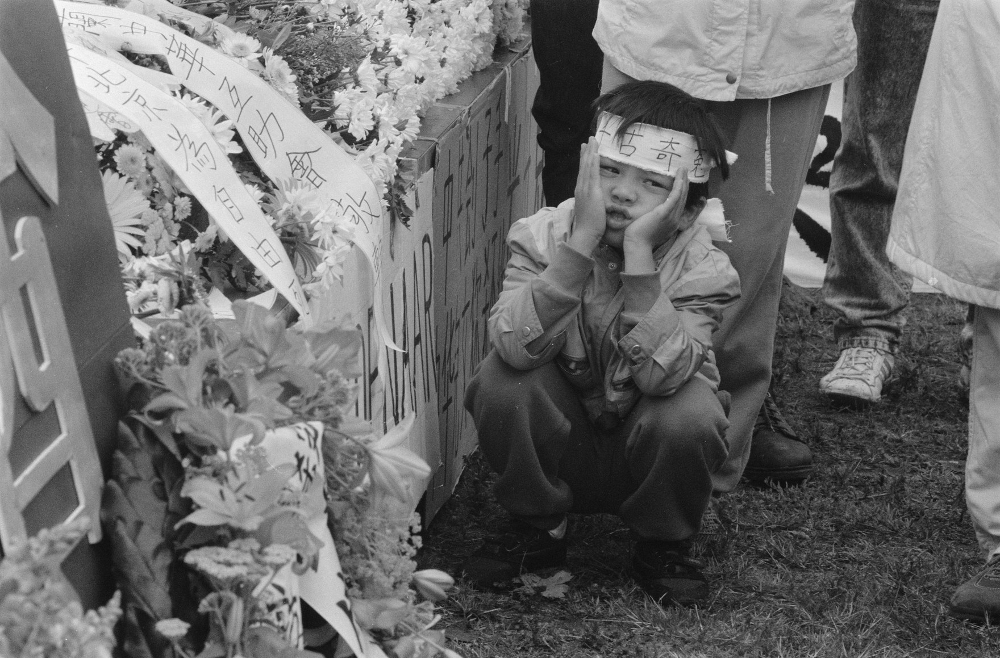

Memorial in The Hague
海牙的悼念现场

A participant crouches beside a memorial covered with flowers during a gathering in The Hague for victims of the crackdown.
在海牙悼念六四遇难者的集会上，一名参与者蹲在摆满鲜花的纪念牌旁。
Photo record
- Date
- June 7, 1989
- Location
- The Hague, Netherlands
- Photographer
- Rob Bogaerts / Anefo
- Source
- Wikimedia Commons record Nationaal Archief · 934-4657 Full-size source file
- Reuse
- CC0 1.0
The archive uses resized copies of the Wikimedia Commons file.